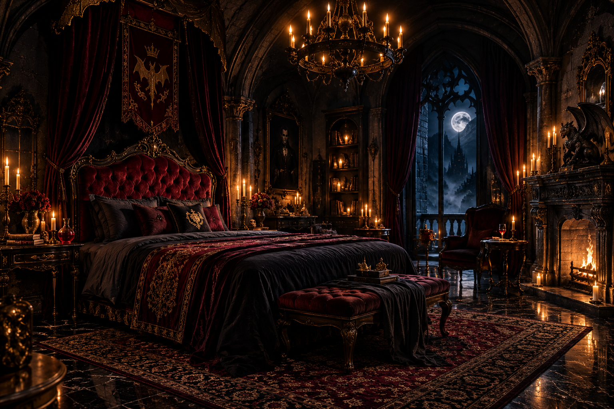
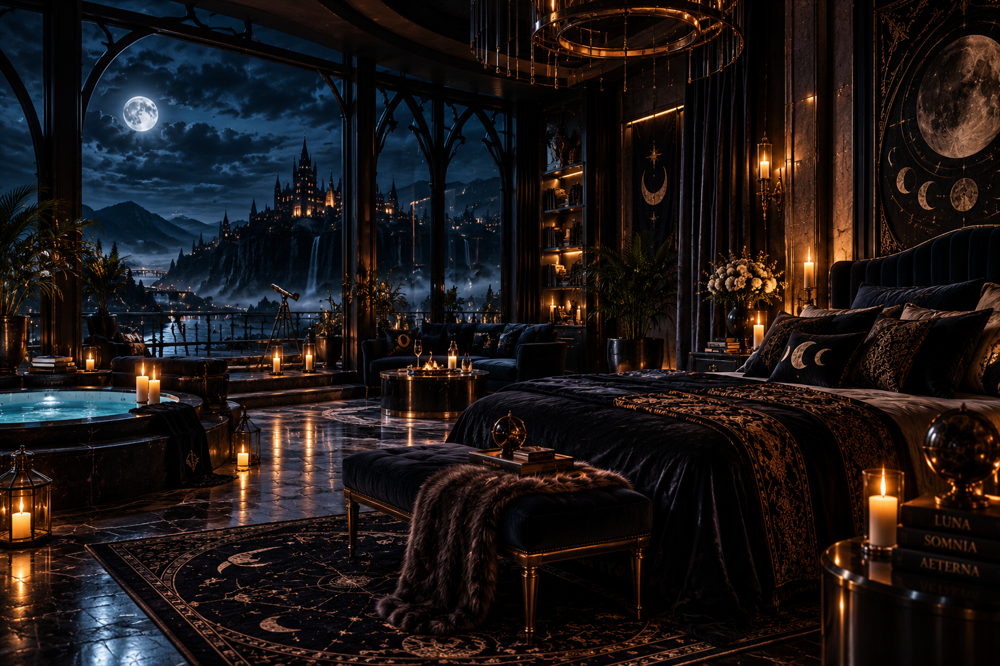
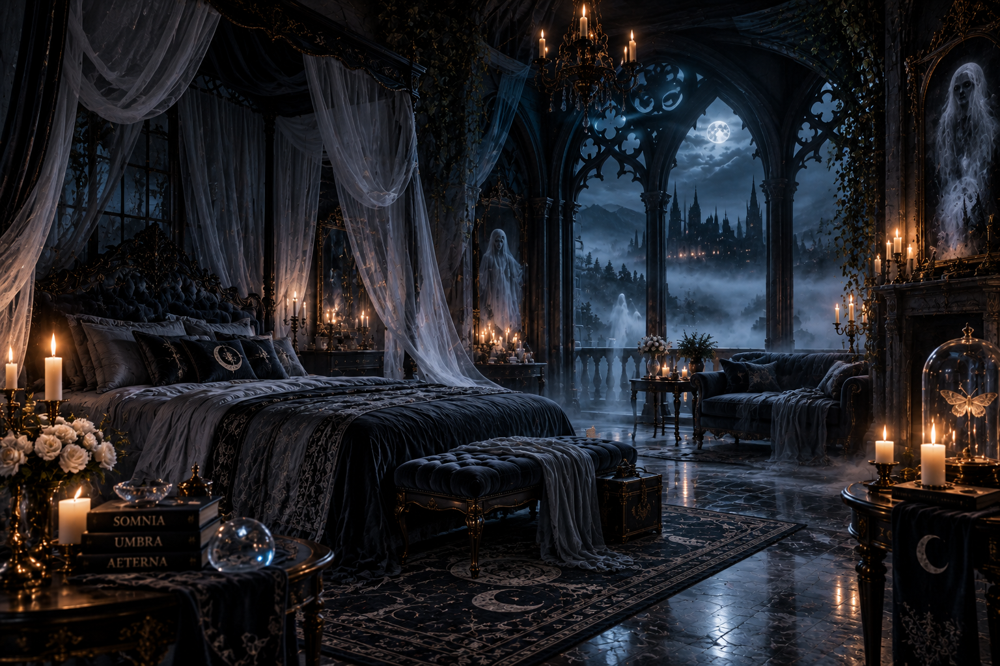
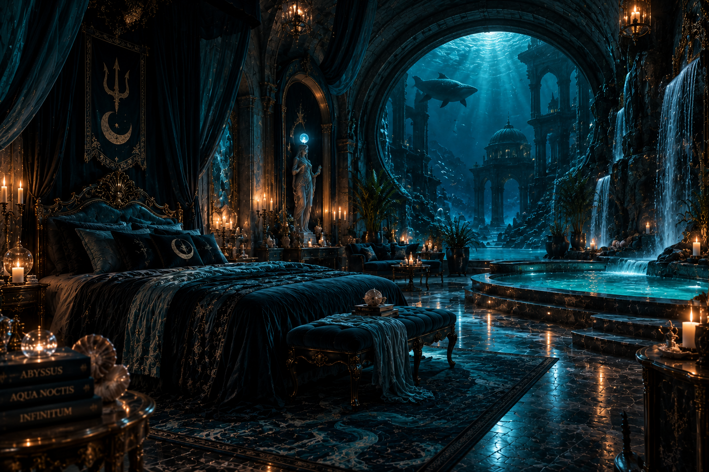
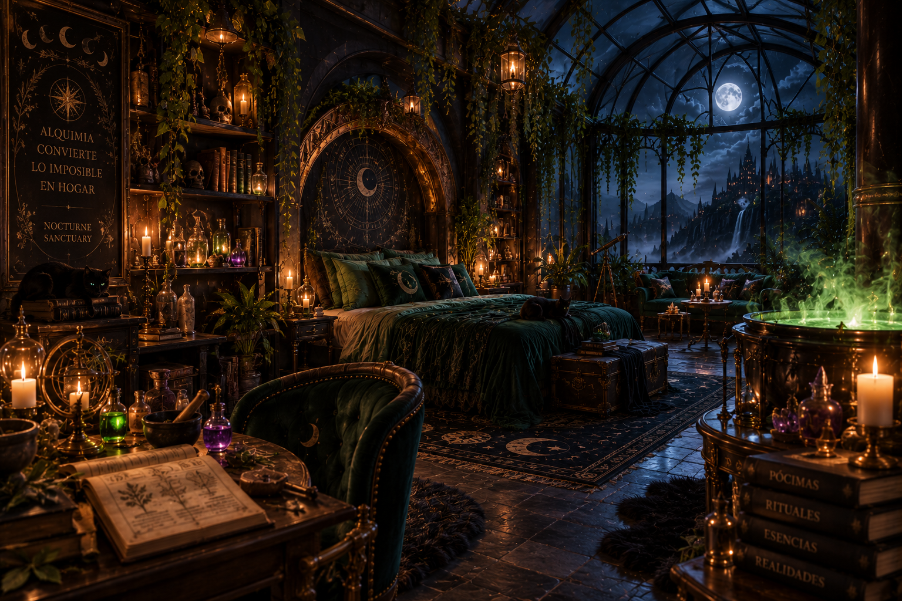

Alimentación Especial
Servicio preparado según las necesidades de cada criatura y sus características sobrenaturales.
- Servicio nocturno privado
- Alimentación especializada
- Bebidas exclusivas del santuario
PROTOCOLO DE ACOGIDA IMPERIAL
Acondicionamiento selectivo, barreras ancestrales y resguardo arcano personalizado para cada criatura nocturna.

SUITE IMPERIAL
Una residencia ceremonial diseñada para huéspedes que buscan privacidad absoluta, protección sobrenatural y una estancia exclusiva dentro del santuario.
Capacidad: 4 huéspedes
Ambiente: Oscuro y ceremonial
Desde $450.000 por noche

SUITE SUPERIOR
Una residencia elevada con vistas hacia la noche, espacios amplios y una atmósfera diseñada para huéspedes que buscan privacidad absoluta.
Capacidad: 3 huéspedes
Vista: Luna y montañas
Ambiente: Privado y exclusivo
Desde $320.000 por noche

RESIDENCIA ESPECIAL
Una habitación rodeada de misterio y silencio, creada para huéspedes que buscan descansar lejos de la actividad del santuario.
Capacidad: 2 huéspedes
Desde $220.000 por noche

RESIDENCIA ACUÁTICA
Una estancia inspirada en las profundidades del océano, con espacios acuáticos, arquitectura ancestral y una conexión directa con los misterios del mar.
Capacidad: 2 huéspedes
Desde $280.000 por noche

ESTANCIA ARCANA
Un espacio creado para amantes del conocimiento oculto, la alquimia y los rituales nocturnos, rodeado de libros, plantas y elementos mágicos.
Capacidad: 2 huéspedes
Desde $240.000 por noche
SERVICIOS EXCLUSIVOS
Cada huésped del Nocturne Sanctuary puede disfrutar de servicios especiales diseñados para garantizar comodidad, privacidad y seguridad.
Servicio preparado según las necesidades de cada criatura y sus características sobrenaturales.
El santuario cuenta con diferentes medidas de protección para garantizar una estancia segura.
Nuestro personal está disponible para atender las necesidades especiales de los huéspedes durante su estancia.